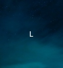
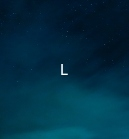
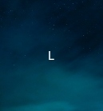

En la arena del juego, cada jugador despliega sus nueve fichas con determinación: tres pequeñas, tres medianas y tres grandes. Una vez que una ficha toca el suelo del tablero, se convierte en un pilar inamovible, un testamento de la elección estratégica del jugador.
Al llegar al turno tres, se puede desatar el frenesí, una etapa donde cada movimiento debe ejecutarse con rapidez y agudeza. El reloj se convierte en un enemigo silencioso, presionando a los jugadores a decidir con velocidad.
Las reglas del juego son claras: las fichas grandes pueden capturar tanto a las medianas como a las pequeñas, las medianas pueden capturar a las pequeñas, y las pequeñas son las piezas clásicas, sin poder para capturar a otras. Además, se permite la táctica inusual de capturar las propias fichas.

La partida puede concluir de dos maneras: un jugador logra colocar tres fichas en línea, proclamando su victoria, o el tablero se llena hasta el punto en que ya no quedan movimientos posibles, resultando en un empate.
En esta batalla de tácticas y movimientos, la estrategia y la paciencia se entrelazan en una danza sutil. ¡Que comience el juego y que el mejor estratega prevalezca!
.jpg) 
